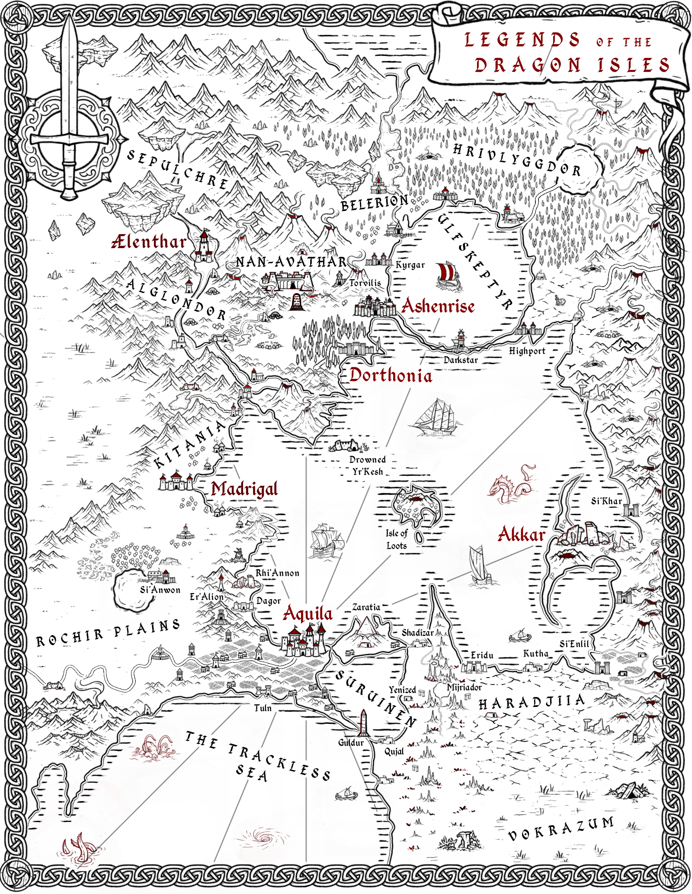

Welcome to Wåndyr!
Wåndyr, an Adventure Game v0.1 (initial version)
Wåndyr, an Adventure Game v0.2 (working version)
Wåndyr, an Adventure Game v0.5 (candidate new version)
The game fits into a small 16 page booklet. All players and the Guide should read this first.
Wåndyr has its own approach to spellcasting, but is compatible with spells from the original roleplaying game and similar.
The Magic Oracle is an AI prompt to help the Guide generate spells and spellbooks.
Wåndyr Magic Oracle (AI prompt)
The World Oracle is a set of useful random tables for the Guide.
Wåndyr is compatible with monsters from the original roleplaying game. You can use any books of monsters you like, but here is an example.
Wåndyr expects to start in an undefined "wilderland" that emerges during play. You can optionally place that somewhere in the fantasy world of your choice.
My personal setting is Dragon Isles.
Dragon Isles World Overview - Dragon Sea
Dragon Isles World Map (simple)
Dragon Isles World Map (full color)

Nobody available this week? Wåndyr also works well for AI solo play. While you can use any AI you like, Claude is generally better at this than ChatGPT. Just create a Claude Project and add the game rules, world oracle, and this AI prompt.
Copyright © 2025 Paul Abrams
All rights reserved. No part of this work may be reproduced or transmitted in any form or by any means whatsoever without express written permission from the author, except in the case of brief quotations embodied in critical articles and reviews. Please refer all pertinent questions to the publisher.